Hi, I'm Foobie — your sassy monthly reminder to check ’em.
Breast health & early detection
A monthly reminder to do your breast self-exam — because catching a change early starts with knowing what's normal for you.
Feel It on the First
Know your normal.
Step by step
Same time each month, ideally a few days after your period ends — when tissue is least tender. If you don't menstruate or won't remember, Feel It on the First. Do it undressed from the waist up — you can't see or feel changes through a bra.
With your arms relaxed at your sides, look for changes in size, shape, swelling, skin texture, or nipple changes.
Lift both arms overhead and look again for dimpling, puckering, pulling, swelling, or changes around the nipples.
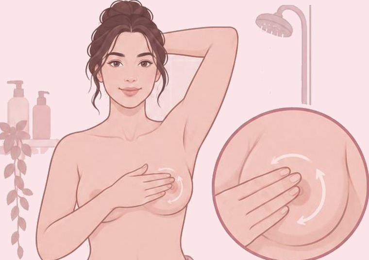
Using the pads of your 3 middle fingers, move in small circles with light, medium, and firm pressure. Cover the whole area — from your collarbone down to the bottom of your ribs, and out into the underarm.
Lie down with one arm behind your head. Use the opposite hand to cover the same area — collarbone to ribs, and into the underarm — then repeat on the other side.
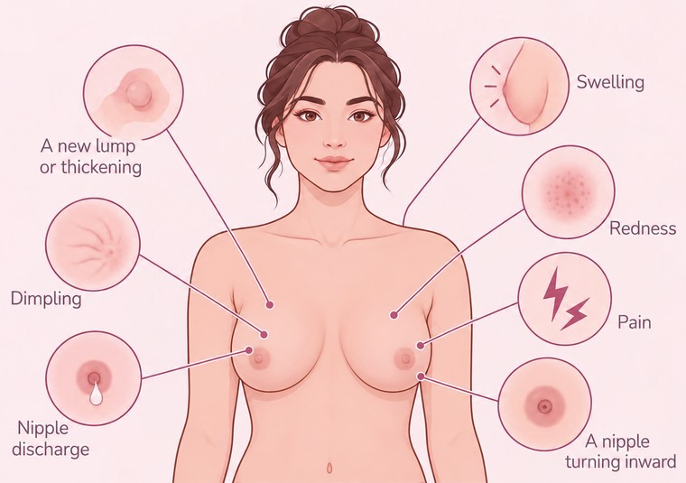
Look for a new lump, thickening, swelling, dimpling, redness, nipple discharge, pain, or a nipple turning inward. Anything new that persists is worth a call to your doctor.
This is general education, not medical advice. If something concerns you, contact a healthcare provider — don't wait for the 1st to come around again. Self-checks supplement screening; they don't replace mammograms or a clinical exam.
A repeating reminder on the 1st of every month, so you never have to remember on your own.
On iPhone the file opens straight into your Calendar app. On Android you may need to tap the downloaded file to import it.
Know your normalso you can notice when something changes
Self-checks don't replace mammograms or a doctor's exam. They help you notice when something has changed.
Figures: NCI SEER and the American Cancer Society. Lifetime risk is SEER's 13.0%, from 2021–2023 data; SEER counts in situ disease separately, which is why this figure is invasive cancer. The survival figure is for cases diagnosed 2015–2021, and ACS notes the localized group "only includes invasive cancer. It does not include ductal carcinoma in situ." "Relative survival" compares people with the diagnosis to the general population; individual outcomes vary.
Per Mayo Clinic, these are the changes worth paying attention to:
Cancerous lumps often feel firm, irregular, and fixed in place — but feel alone can't confirm anything. Any new or unusual change is worth a call to your doctor.
If you are facing mastectomy, these are the main paths people choose between. Which are available to you depends on your anatomy, your treatment plan, and any previous surgery — a plastic surgeon can tell you which apply.
Delaying is always an option — but see a board-certified plastic surgeon before your mastectomy, not after. What waiting costs you depends on your own anatomy and treatment plan, and they are the one person who can tell you. If radiation is part of your treatment, say so early: it affects both which methods are open to you and when they can be done. You can search by area in the ASPS directory of member surgeons.
This is general education, not medical advice, and it doesn't cover the risks and recovery of each option. Those are conversations to have with your surgical team.
Compiled from National Cancer Institute, American Cancer Society and American Society of Plastic Surgeons patient information.
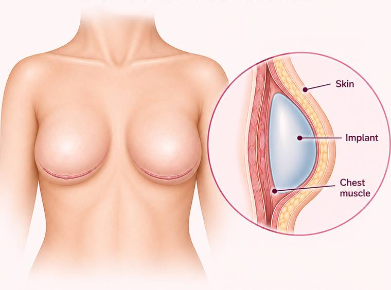
An implant is placed at the same time as the mastectomy, so the breast mound is rebuilt in one operation rather than two. Depending on the plan, the implant may sit above or below the chest muscle. Above it, a supportive mesh or tissue matrix usually holds the implant in position and the muscle is left undisturbed; below it, the muscle covers the implant but has to be lifted to make room. This route needs enough healthy skin left after the mastectomy to cover an implant straight away. Further refinements are still common afterwards.
Sources: American Society of Plastic Surgeons; National Cancer Institute; American Cancer Society.
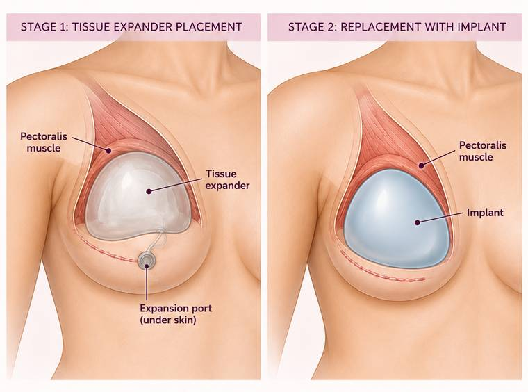
A temporary expander is placed first, then filled gradually through a small port, usually with saline and at visits every week or so. Some newer expanders use air instead and can be filled at home, which cuts down the trips. Where the expander sits determines what has to stretch: under the chest muscle it stretches the muscle as well as the skin, while over the muscle it stretches skin alone, usually with a supportive mesh or tissue matrix placed around it. The chest is typically ready two to six months later, when a second, shorter operation swaps the expander for a permanent implant.
Sources: American Society of Plastic Surgeons; National Cancer Institute; American Cancer Society.
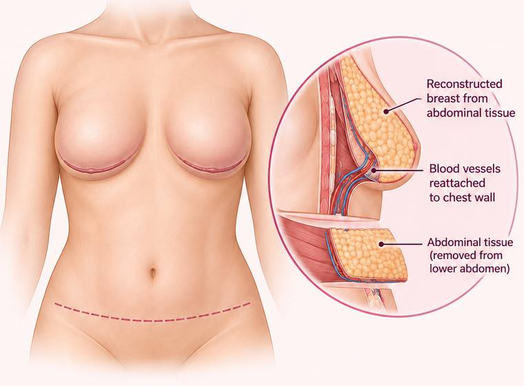
Deep inferior epigastric perforator flap. Uses skin and fat from the lower abdomen while sparing the rectus abdominis muscle. The small vessels supplying the tissue are dissected out through the muscle, then reconnected to vessels in the chest under a microscope. Because the muscle is preserved, there is a lower risk of abdominal weakness than with a TRAM flap.
Sources: American Society of Plastic Surgeons; National Cancer Institute; American Cancer Society.
Transverse rectus abdominis myocutaneous flap. Uses muscle, fat and skin from the lower abdomen. It is the abdominal flap that takes muscle, so the risk of abdominal weakness or hernia is higher than with a DIEP, which spares the muscle. It is done in two ways, and they differ in how much of the muscle goes with the tissue. Either way the abdomen is left with a scar from hip bone to hip bone and around the navel. Not having enough donor tissue in the lower abdomen, or earlier scars that may have damaged the important blood vessels, can rule it out.
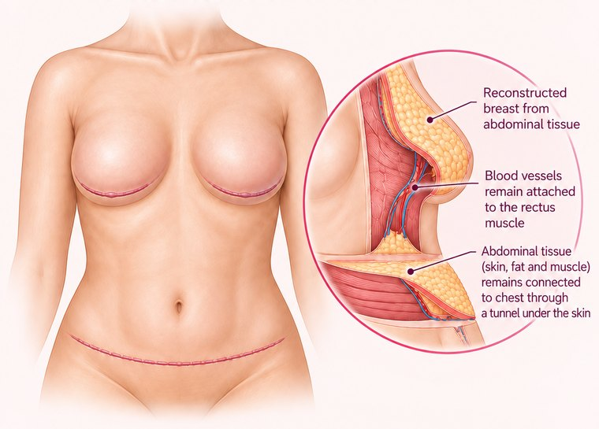
The tissue never leaves its own blood supply. That supply comes from the rectus muscle underneath it, so the flap stays attached to the muscle and is tunneled up through the abdomen and chest to form the breast mound. The entire muscle on that side is sacrificed, and you may be left with some abdominal weakness, or find sit-ups difficult.
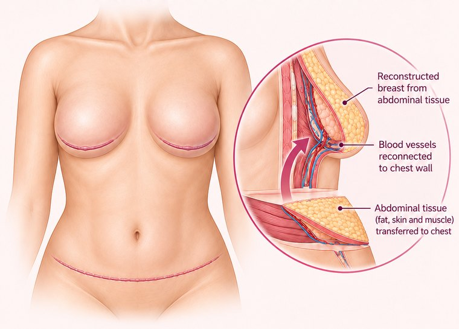
Also supplied by the blood vessels running through the rectus muscle, but here the muscle above and below those vessels is divided, so that only a portion of it is removed. The whole flap is then transplanted to the chest and its vessels joined to vessels there under a microscope.
Sources: American Society of Plastic Surgeons; National Cancer Institute; American Cancer Society.
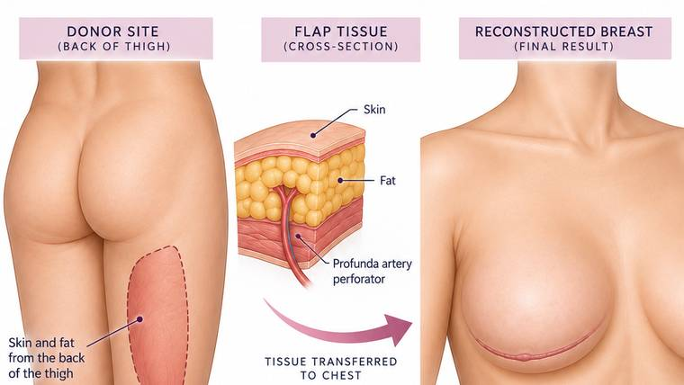
Profunda artery perforator flap. Uses skin and fat from the back of the upper thigh, supplied by perforating vessels from the profunda femoris artery. No muscle is taken, so it is considered muscle-sparing. The scar is usually hidden in the crease between the lower buttock and upper thigh. For a larger breast it may be combined with an implant or another flap.
Sources: American Society of Plastic Surgeons; National Cancer Institute; American Cancer Society.
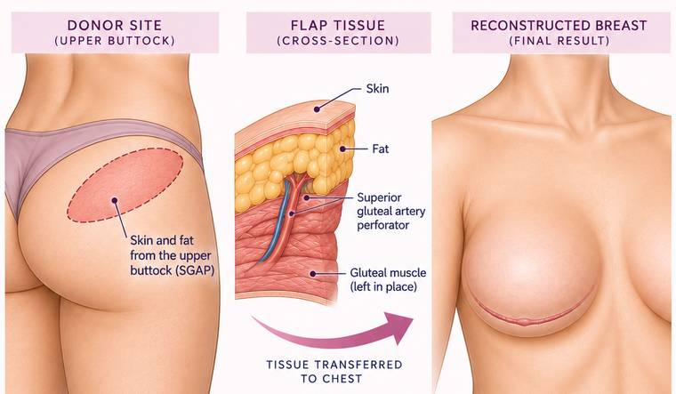
Superior gluteal artery perforator flap. Uses skin and fat from the upper buttock, sparing the gluteal muscle. An option when abdominal tissue isn't available or preferred. Best suited to small or medium volume breasts; for a larger breast it may be combined with an implant or another flap.
Sources: American Society of Plastic Surgeons; National Cancer Institute; American Cancer Society.
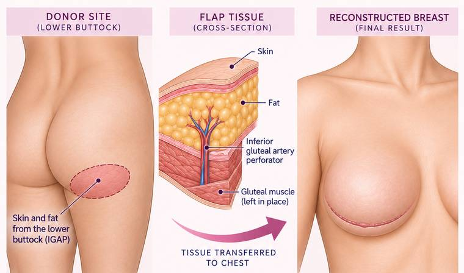
Inferior gluteal artery perforator flap. Similar to SGAP but takes tissue from the lower buttock near the crease, sparing the gluteal muscle. The ASPS notes it is used less often than SGAP because the scar ends up near the area you sit on. For a larger breast it may be combined with an implant or another flap.
Sources: American Society of Plastic Surgeons; National Cancer Institute; American Cancer Society.
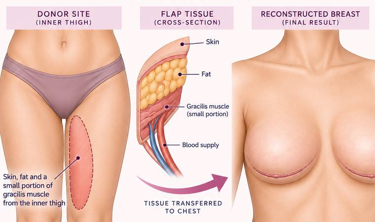
Transverse upper gracilis flap — one of the gracilis-based flaps, named for the direction of the thigh incision (the vertical and diagonal versions are called VUG and DUG). Uses skin, fat, muscle and blood vessels from the upper inner thigh. The gracilis muscle helps draw the leg inward, and the ASPS notes that this function is lost after the surgery, so it is worth asking your surgeon what to expect. For a larger breast it may be combined with an implant or another flap.
Sources: American Society of Plastic Surgeons; National Cancer Institute; American Cancer Society.
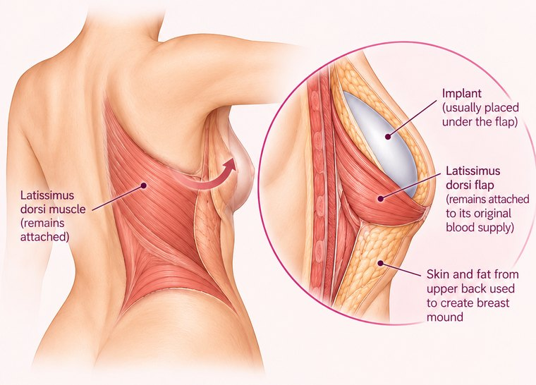
Uses skin, fat and muscle from the upper back, tunneled through the armpit to the chest while staying attached to its own blood supply — this is called a pedicled flap, so the vessels don't need reconnecting. An implant or expander is usually placed behind it to reach the size wanted. The ASPS notes it is often chosen after radiation, because it brings healthy skin and new blood supply to the treated area. It is the one flap here that moves a working muscle, so ask your surgeon what to expect for shoulder and back function.
Sources: American Society of Plastic Surgeons; National Cancer Institute; American Cancer Society.
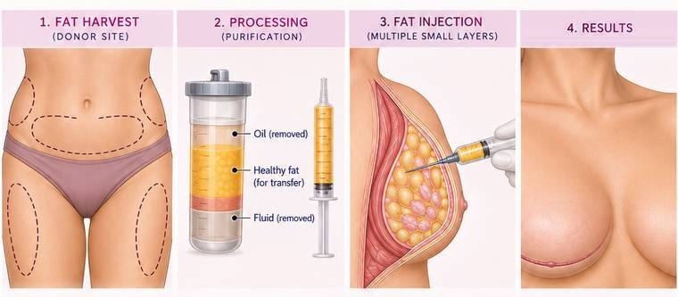
Fat is taken from elsewhere by gentle liposuction, purified, and injected in small amounts to smooth contours and improve shape. Several sessions are often needed, because some of the transferred fat is reabsorbed naturally.
Sources: National Cancer Institute; American Cancer Society.
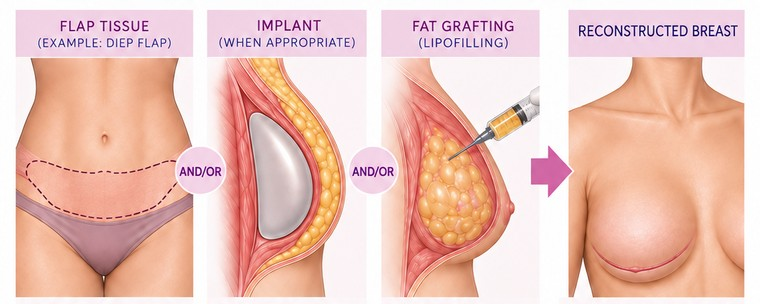
More than one technique used together. An implant can be an addition to a flap, not only an alternative: a latissimus dorsi flap often supplies the muscle and tissue to cover and support an implant rather than forming the whole breast itself. An implant can also hold the space during other cancer treatment, until you are ready for flap surgery. Fat grafting usually comes later, as a staged revision to improve symmetry and the look of the donor site.
Sources: American Society of Plastic Surgeons — techniques; ASPS — procedure steps; National Cancer Institute.
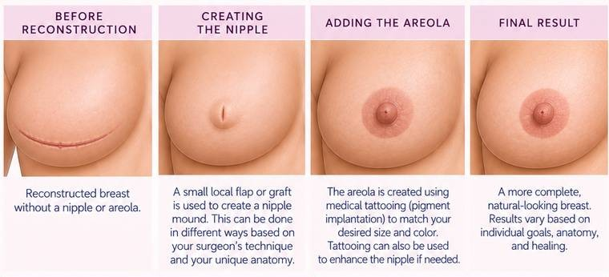
Usually the last step, once the chest has healed and the breast mound has settled into position. A nipple can be built surgically, by lifting and shaping small pieces of skin from the reconstructed breast itself; the areola is then added a few months later, most often with tattoo ink, occasionally with a skin graft taken from the groin or abdomen. Or the whole thing can be done by a tattoo artist who specialises in 3-D nipple tattooing — flat to the touch, but convincingly real to look at. Worth knowing too: for some people a nipple-sparing mastectomy, which keeps the original nipple and areola, is possible. Whether it is depends on the size and position of the cancer and on the shape of the breast.
Sources: National Cancer Institute; American Cancer Society.
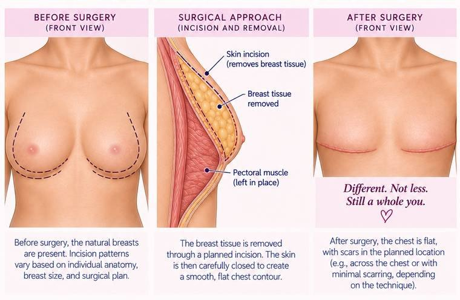
Also called aesthetic flat closure. The breast tissue is removed, then excess skin and fat are taken away and what remains is tightened and contoured so the chest wall lies smooth and flat. It is an operation in its own right: simply declining reconstruction after a mastectomy does not produce a flat closure, which is worth asking about directly. It is also an option for people having implants removed. A deliberate choice, not an absence of one.
Sources: National Cancer Institute; American Cancer Society.
Self-checks help you notice change. Mammograms find cancers too small to feel. They do different jobs, and you want both.
Two major bodies publish screening guidance for women at average risk, and they don't fully agree. Neither is wrong — they weigh the same evidence differently. Here is what each says, so you can talk it through with your own doctor.
Most plans have to cover screening mammograms as preventive care, without a copay. What that means for you depends on your plan, so check yours.
All of the above is for women at average risk. If yours is higher — a strong family history, a known gene change, or chest radiation when you were young — the advice is different: usually an MRI and a mammogram every year, often starting at 30. There is more on .
Screening changes. A reconstructed breast is not usually given mammograms; the chest is checked by physical examination instead. If you still have your other breast, it carries on being screened as normal. Knowing what is normal for your chest wall matters just as much after surgery as before it — new lumps, thickening or skin changes are still worth a call.
The ACS does not recommend clinical breast exams as a screening test for women at average risk. That isn't a reason to skip appointments — it's a reason not to rely on them instead of a mammogram.
Sources: American Cancer Society — screening guidelines; U.S. Preventive Services Task Force; ACS — mammograms after breast cancer surgery; healthcare.gov — preventive care for women.
Take this with you. You are allowed to ask all of it, and a good surgeon will be glad you did.
Two more worth adding, from the pages in this site: will I need more than one operation, and how many of this particular procedure do you do each year?
Adapted from the American Society of Plastic Surgeons consultation checklist.
Everyone has breast tissue. Breast cancer in men is uncommon, but it is not rare enough to ignore — and it is too often found late.
The most common sign is a painless lump or thickening in the breast, chest or underarm. It may be tender but usually isn't. Any change to the chest or nipple is worth checking — dimpling or puckering of the skin, redness or scaling, a nipple turning inward, or discharge.
Most men diagnosed have no known risk factor beyond getting older. That's exactly why the advice is the same as it is for women: know what's normal for you, and get a change looked at rather than waiting to see if it settles.
Sources: American Cancer Society; ACS risk factors.
Free, real people, and no diagnosis needed to call. If cost or access is the thing standing in your way, start here.
If your insurance covers mastectomy, it has to cover reconstruction. The Women's Health and Cancer Rights Act of 1998 requires group health plans and insurers that pay for mastectomy to also pay for reconstruction — every stage of it, surgery on the other breast to match, breast prostheses, and treatment for complications including lymphedema. Some plans run by religious organizations and some government plans are exempt, and the law does not apply to Medicare or Medicaid, though Medicare often covers reconstruction anyway and Medicaid varies by state. If you are told reconstruction is not covered, it is worth asking again with this law by name.
Say it out loud when you call. Cost and transport are among the most common reasons people delay screening, and every organization here exists partly to remove that barrier. Asking is normal.
Phone numbers, hours and eligibility verified against each organization's own site. Programs and funding do change — if you find something out of date, please tell us so we can fix it.
Almost everything on this page is written for average risk. If yours is higher, the schedule changes — and a number is how you find out which group you are in.
The American Cancer Society says women at high risk should have a breast MRI and a mammogram every year, usually starting at age 30. One of the things that puts you in that group is a lifetime risk of about 20% to 25% or greater. That is what a risk score is for. It is not trivia; it decides what screening you should be getting, and at what age.
The ACS counts you as high risk, whatever a calculator says, if you have a known BRCA1 or BRCA2 change; a first-degree relative with one and you have not been tested yourself; had radiation to the chest before you were 30; or have Li-Fraumeni, Cowden or Bannayan-Riley-Ruvalcaba syndrome, or a first-degree relative with one of those. If any of that is you, take it to your doctor rather than to a website.
Both tools stall if you do not know your own details, so it is worth gathering these first. Your age, height and weight. The age your periods started, and whether you have been through menopause. Whether you have given birth, and your age the first time. Any hormone replacement therapy, and when you stopped. Whether you have had a breast biopsy and what it showed — hyperplasia, atypical hyperplasia and LCIS are each asked about separately. Whether you have had BRCA testing and what it found. And for family history: who, which cancer, and at what age they were diagnosed — on both sides, including aunts and grandmothers. If your mammogram report mentions breast density, the IBIS tool will take that too.
The NCI says plainly that its tool cannot accurately estimate risk for women carrying a BRCA1 or BRCA2 mutation, or for women with a previous invasive or in situ breast cancer — and that includes DCIS and LCIS. Tyrer-Cuzick says the same: if you have been diagnosed, do not use it. If that is you, the number is not yours to calculate. Your team works from what actually happened to you.
The NCI also notes the tool is validated for women in the United States who identify as White, Black or African American, Hispanic, and Asian and Pacific Islander; that it may underestimate risk in Black women who have had previous biopsies and in Hispanic women born outside the United States; and that estimates for American Indian and Alaska Native women are based partly on data for White women and may be inaccurate.
And one thing the NCI says that is worth carrying with you: these numbers cannot say which woman will develop breast cancer. Some women who never develop it have higher estimates than some women who do. A low number is not a promise, and a high one is not a sentence. It is a reason to have a specific conversation.
Sources: National Cancer Institute — Breast Cancer Risk Assessment Tool; American Cancer Society — screening guidelines; the IBIS / Tyrer-Cuzick model, Queen Mary University of London; the Tyrer-Cuzick calculator, MagView.
Hi, I’m Nicky, the creator of Foobs On The Loose and the slightly unhinged mind behind Foobie. 💗
I’ve spent nearly 30 years working in healthcare, but nothing really prepares you for becoming the patient.
Breast health was personal to me long before it was ever about me. My mom is a three-time cancer survivor, first diagnosed with breast cancer at 42. Complications and a failed reconstruction left her with no option but to remain flat; today, she is a flattie who wears prosthetics. Her experience shaped my understanding of early detection, self-advocacy, and paying attention to your body.
My own extremely dense breast tissue made imaging difficult to interpret, and calcifications became the turning point. In 2023, I made the difficult decision to have a bilateral mastectomy. Pathology afterward revealed atypical lobular hyperplasia (ALH) and a PASH tumor.
became far more complicated than I expected. A rare infection, flap necrosis, and exposed implants led to multiple surgeries and the loss of both implants. Tissue expanders, months of antibiotics, and another surgery eventually brought me to the implants I have now.
That is the medical version. It cannot capture the setbacks, the scars, the uncertainty, or the tears and loss along the way.
Through it all, my mom was there every day, staying with me, helping me, and caring for me through the hardest parts. After everything she had endured herself, she showed up for me with so much love. I will always be grateful that I had her beside me.
Dr. De La Cruz, my plastic surgeon, got every version of me — hopeful, scared, frustrated, and exhausted. She had patience for all of them. And after so much loss, she helped give me back something I wasn’t sure I would have again. That will always mean more to me than she knows.
I created Foobs On The Loose because breast health education should feel human. There is plenty of serious information out there, but too often it is buried in medical language, fear, or sterile pamphlets that do not prepare you for actually living it.
This page is about knowing your body, understanding your options, asking questions, advocating for yourself, and feeling less alone. A big part of that is Feel It on the First, my monthly reminder to know your normal so you notice when something changes.
The information here is serious, because breast health is serious. The nonsense lives on social — that is where Foobie and I are considerably less well behaved. There is still room here for the parts that are awkward, frustrating, ridiculous, or just plain hard.
Foobie was born during my reconstruction complications and quickly became the loud little voice of this page.
She’s scarred.
She’s reconstructed.
She’s occasionally censored by social media.
She has absolutely no intention of behaving.
And I wouldn’t have her any other way.
She started as humor during a time when I desperately needed some, but she grew into something much bigger. Foobie represents the messy, funny, frustrating, empowering parts of breast surgery, reconstruction, body image, and healing that do not always make it into the medical pamphlets.
Together, we’re here to educate, empower, support, and remind you to know your body and use your voice.
Different bodies. Different choices. Different journeys.
All real. 💗
Foobie is loose on both Instagram and Facebook, and she has no intention of behaving: your monthly nudge, real talk, the ridiculous bits nobody warns you about, and a community that's got your back (and front). Much the same on both — follow whichever one you actually open.